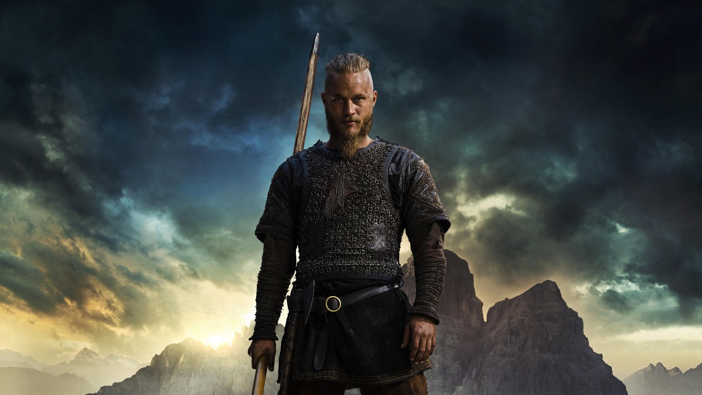
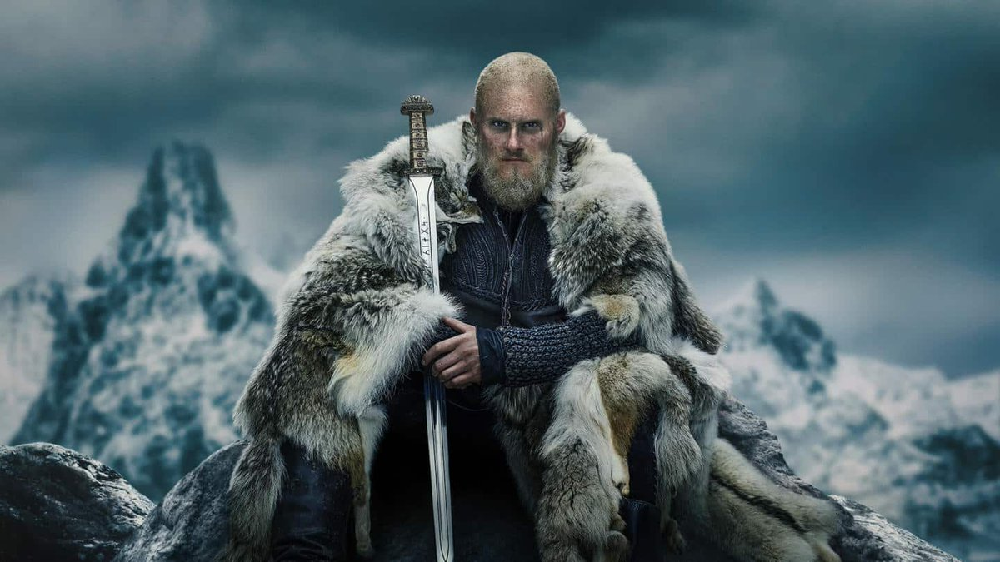
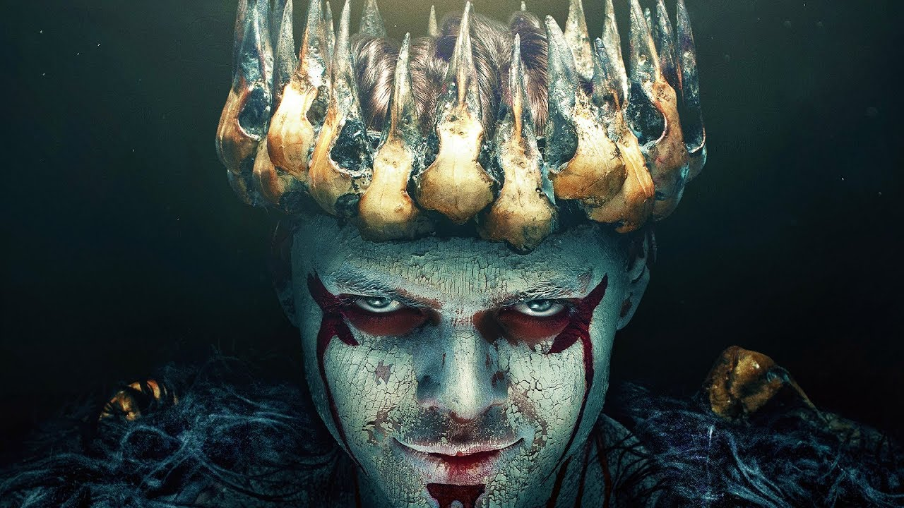
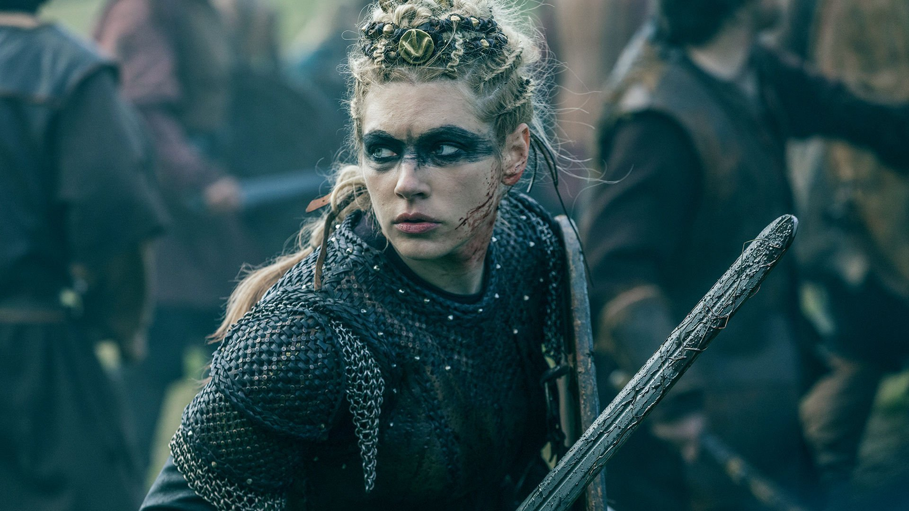
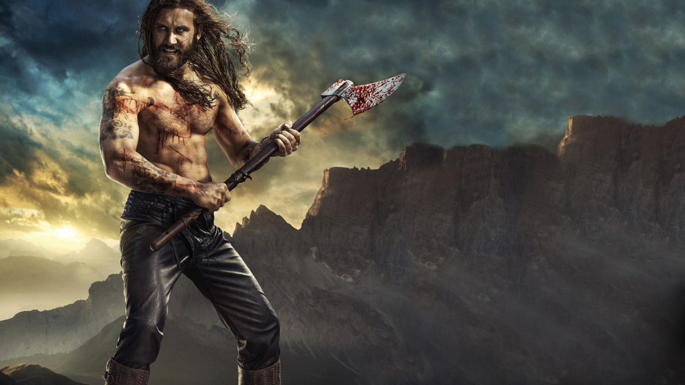
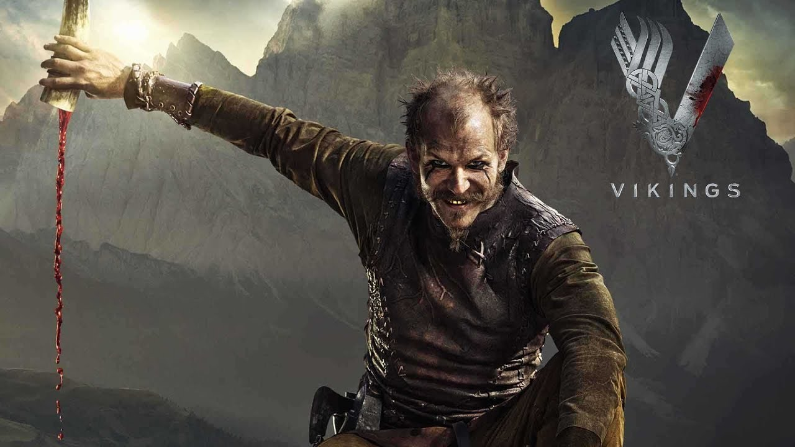
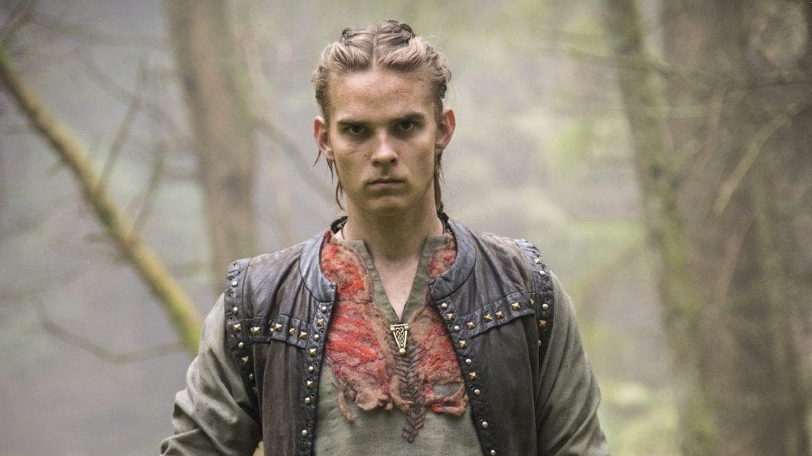
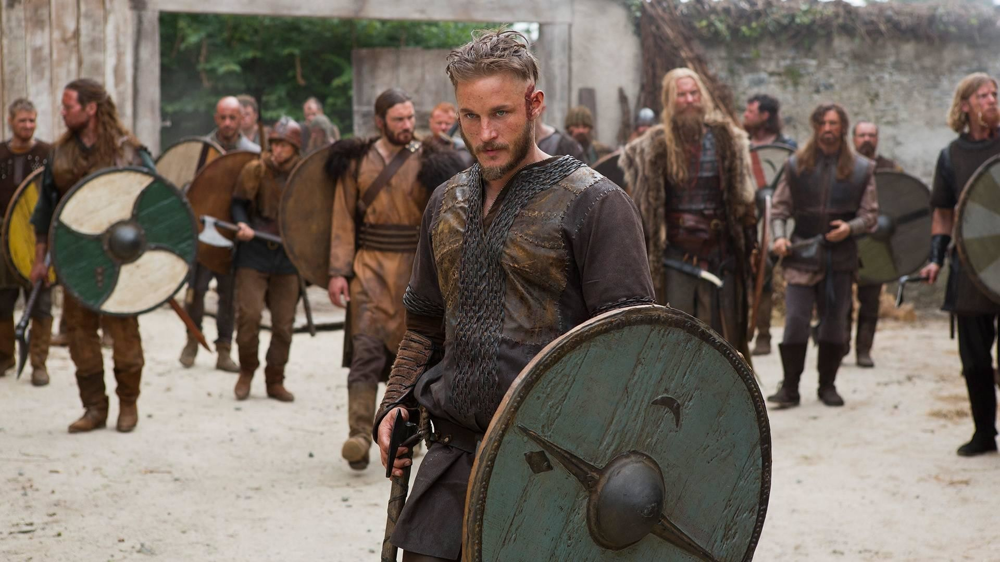

Рагнар
Рагна́р Лодбро́к (др.-сканд. Ragnarr Loðbrók) - полулегендарный скандинавский конунг из рода Инглингов, ключевой персонаж сериала.
Умелый воин и амбициозный вождь, Рагнар на протяжении почти всей своей жизни следует пути викинга. Рассекая море в поисках боевой славы и наживы, он стремится обрести новые знания, открыть неизвестные земли и изменить нелегкую судьбу своего народа, живущего в суровых условиях Скандинавского полуострова
Бьёрн
Бьёрн Железнобо́кий (др.-сканд. Björn Járnsíða, швед. Björn Järnsida) - полулегендарный скандинавский конунг, основатель шведской королевской династии Мунсё.
Сильный и решительный человек, Бьёрн намерен стать великим воином, лидером и первооткрывателем. Он полностью разделяет жажду своего отца к приключениям и поддерживает его, регулярно участвуя в грабительских набегах викингов. Набравшись опыта в сражениях и мореплавании, возглавляет собственные походы.
Ивар
И́вар Беско́стный (др.-сканд. Ívarr hinn Beinlausi) - полулегендарный вождь датских викингов, известный неистовством в бою.
Самый агрессивный и неуравновешенный среди своих братьев.Многие годы Ивар не может ходить и передвигается либо с посторонней помощью, либо ползком. В период завоевания Англии Великой датской армией ему удается подняться на ноги, оковав их железом.
Лагерта
Лаге́рта (или Хладге́рда, др.-сканд. Hlaðgerðr, лат. Ladgerda, Ladgertha или Lagertha; в сериале также носит псевдоним Ингстад) - известная скандинавская воительница, упомянутая в хрониках Саксона Грамматика, первая жена датского морского конунга Рагнара Лодброка..
Эта отважная и независимая женщина способна проявлять железную решимость, когда дело касается ее личного достоинства, семьи или власти. Лагерта также известна своим милосердием и благородством.
Ролло
Ро́лло (или Хрольф, др.-сканд. Hrólfr, лат. Rollo) - известный вождь викингов, первый герцог Нормандский, основатель Нормандской династии. Знаменитый своей силой, бесстрашием и диким, импульсивным нравом, он активно участвует в разорительных набегах викингов на страны Европы.
Безуспешные попытки возвыситься на фоне влиятельного и удачливого брата приводят Ролло к ожесточенной внутренней борьбе, которая делает его несчастным и вынуждает искать пути выхода из кризиса.
Флоки
Флóки (др.-сканд. Flóki) - скандинавский кораблестроитель, активно участвующий в грабительских набегах викингов на страны Европы. Близкий друг и соратник Рагнара Лодброка.
Эксцентричный и чудаковатый, он живет в уединенном доме в лесу, работая в своей мастерской на берегу моря.
Хвитсерк
Хви́тсерк (др.-сканд. Hvítserkr, лат. Withsercus) - полулегендарный скандинавский конунг, правивший, согласно средневековым авторам, на территории нынешней Швеции и, вероятно, на Руси (Гардарики).
Увы, из-за пережитых впечатлений Хвитсерк вскоре отстраняется от дел и превращается в пьяницу, одержимого местью. Он становится главным виновником гибели Лагерты и отправляется в изгнание, в ходе которого примиряется с Иваром и участвует с ним в походе русов против Скандинавии.
Уббе
У́ббе (также известен как У́бба, Ху́бба и У́бби, др.-сканд. Ubbi) - полулегендарный конунг данов, один из предводителей Великой языческой армии, длительное время опустошавшей Англию.
Уббе Рагнарссон предстает достаточно сдержанным и рациональным человеком. Он никогда не забывает о чести, но в то же время всегда готов решить проблему ненасильственным, компромиссным путем, что делает его весьма гибким и дипломатичным лидером.